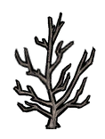
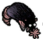
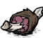
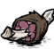
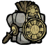
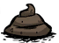
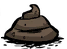

Bem, agora que você já escolheu o seu personagem e conhece um pouco mais sobre o jogo,esta na hora de colocar em ação!
Ao começar o mundo, você surgira debaixo sob um portal que no momento não possui muita utilidade a não ser de marcar o local de Spawn dos jogadores. Comece coletando recursos básicos como (

 ). Faça algumas ferramentas () e explore o mundo! Não se esqueça de ter uma fonte de luz durante a noite! Caso esteja em duvida até quantos recursos você deve coletar, aqui está uma recomendação:
). Faça algumas ferramentas () e explore o mundo! Não se esqueça de ter uma fonte de luz durante a noite! Caso esteja em duvida até quantos recursos você deve coletar, aqui está uma recomendação:


 )e observar os padrões de certos mobs. Por exemplo: Borboletas(
)e observar os padrões de certos mobs. Por exemplo: Borboletas( ) nascem de flores(
) nascem de flores( ) e freqüentemente iniciam uma animação de “pouso” e durante essas animações seria uma boa hora para atacar-las para obter ()! Pode não parecer, mas asas de borboletas são tão nutritivas(8
) e freqüentemente iniciam uma animação de “pouso” e durante essas animações seria uma boa hora para atacar-las para obter ()! Pode não parecer, mas asas de borboletas são tão nutritivas(8 ) e mais saudáveis(8
) e mais saudáveis(8 ) do que as próprias frutas silvestres()!
) do que as próprias frutas silvestres()!Eventualmente a tarde chegará, e animais como coelhos,porcos e borboletas irão voltar ao seus abrigos enquanto outros animais começarão a sair dos seus (
 ). As toupeiras, assim como as borboletas, são uma excelente fonte de comida() disponível durante a tarde e a noite. Para caçá-las coloque no chão qualquer tipo de mineral() e elas começarão a cavar em direção ao objeto. Ao chegar no objeto ela começará uma animação de “cheirar” o mineral, utilize qualquer ferramenta para ataca-la!
). As toupeiras, assim como as borboletas, são uma excelente fonte de comida() disponível durante a tarde e a noite. Para caçá-las coloque no chão qualquer tipo de mineral() e elas começarão a cavar em direção ao objeto. Ao chegar no objeto ela começará uma animação de “cheirar” o mineral, utilize qualquer ferramenta para ataca-la!Durante a noite, utilize a sua tocha() e continue explorando o mapa. Mas se necessário faça uma fogueira básica() e cozinhe os alimentos adquiridos. Vale lembrar que ao cozinhar um alimento na fogueira a sua validade ira restaurar um pouco, então so cozinhe quando necessário.
Após conseguir alguns materiais, crie uma máquina de ciências() e faça alguns itens:
) se por acaso sobrar espaço no seu inventário e mochila talvez seja bom cavar algumas outras mudas () também! Durante o caminho se por acaso encontrar os beefalos( ) colete um pouco dos resíduos() deixado por eles para fertilizar a sua futura plantação.
) colete um pouco dos resíduos() deixado por eles para fertilizar a sua futura plantação.